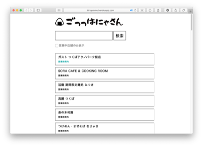
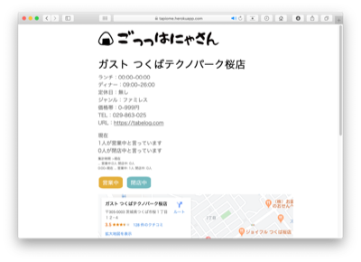

ごっっはにゃさん
2019.08 / WebApplication

筑波大学情報学群の講義 enPitにて制作したアプリケーション。
課題
筑波大学周辺は学生街となっており、飲食店も学生をターゲットとした個人営業の店舗が多い。よってきちんとした情報発信がなされないことも多く、学生は臨時休業などの情報を入手しづらい状況にある。
アプローチ
お店を訪れたユーザーが店舗が開店しているか否かを簡単なUIを通して入力することでリアルタイムな店舗の開店情報を共有することが可能なシステムを考案・実装した。
制作：安斎彩季 / 小貫智弥 / 新貝力哉 / 末吉里帆 / 田之頭吾音 / 古川栞
Development
PHP, PostgreSQL